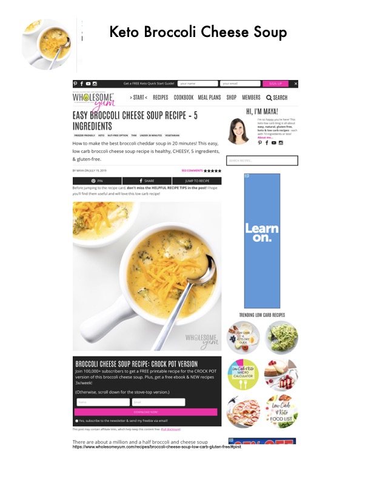

Keto Broccoli Cheese Soup - Complete Recipe with Tips

Original cookbook page 17
Easy 5-ingredient broccoli cheese soup that's low carb, keto, gluten-free, and vegetarian. Ready in under 20 minutes with a creamy, cheesy texture. Includes complete instructions, customization tips, and preparation options.
Prep: 5 minutes • Cook: 20 minutes • Total: 25 minutes
Ingredients
- 4 cups broccoli, cut into florets
- 4 cloves garlic, minced
- 3 1/2 cups chicken broth (or vegetable broth, or bone broth)
- 1 cup heavy cream
- 3 cups cheddar cheese, pre-shredded
Instructions
- In a large pot over medium heat, sauté garlic for one minute, until fragrant.
- Add the chicken broth, heavy cream, and chopped broccoli. Increase heat to bring to a boil, then reduce heat and simmer for 10-20 minutes, until broccoli is tender.
- OPTION 1: Add shredded cheddar cheese gradually (1/2 cup at a time), stirring constantly, until melted. Keep at very low simmer to prevent seizing.
- OPTION 2 (Recommended): Remove 1/3 of broccoli pieces with slotted spoon and set aside. Use immersion blender to puree remaining broccoli. Reduce heat to low. Add shredded cheddar cheese 1/2 cup at a time, stirring constantly until melted. Puree again to make smooth. Remove from heat. Add reserved broccoli florets back to soup.
Recipe #17 from collection